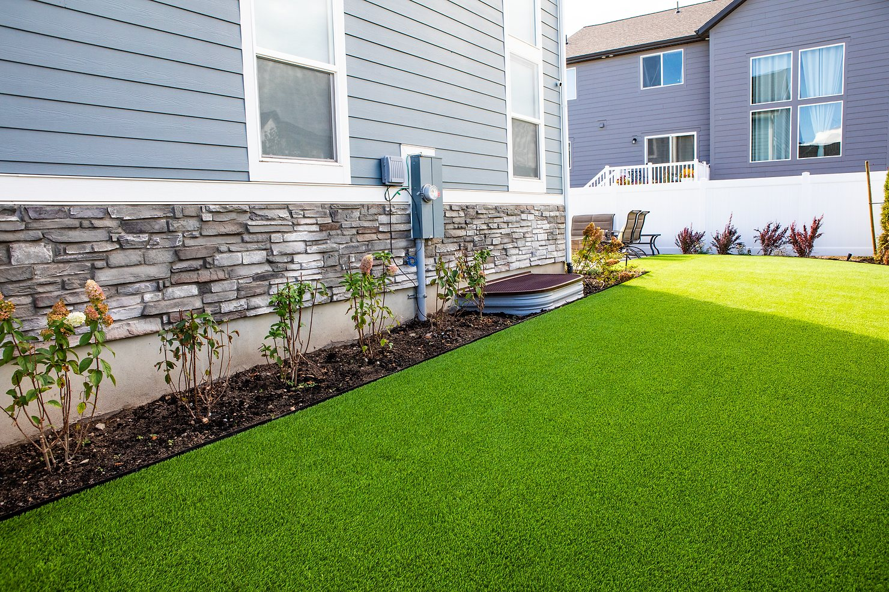

How Long Does Artificial Turf Last?

Artificial turf typically lasts between 15 to 25 years, depending on factors such as quality of installation, level of foot traffic, and maintenance practices. Understanding the lifespan of artificial turf involves considering several factors that influence its longevity.
Artificial turf offers homeowners a long-term solution to maintaining lush green lawns without the hassle of regular upkeep. At Ironhills Landscaping, we understand the importance of durable landscaping solutions that enhance your outdoor living spaces. Here’s what you need to know:
Key Takeaways:
Lifespan of Artificial Turf: Typically lasts between 20 to 25 years with proper care.
Factors Affecting Longevity: Quality of materials, installation, and maintenance are crucial.
Maintenance Tips: Regular rinsing, grooming, and minor repairs can extend its lifespan significantly.
Cost-Effectiveness: Initial investment pays off over time due to minimal maintenance requirements.
Environmental Benefits: Conserves water and reduces the need for harmful pesticides.
Benefits of Artificial Turf
Artificial turf offers numerous benefits that make it a popular choice for residential, commercial, and recreational applications. Here are several advantages of choosing artificial turf for your landscaping needs:
Low Maintenance
Unlike natural grass, artificial turf requires minimal maintenance. It eliminates the need for mowing, watering, fertilizing, and regular pest control, saving both time and money.
Durability
High-quality artificial turf is designed to withstand heavy foot traffic and harsh weather conditions without deteriorating. It maintains its lush appearance year-round with minimal upkeep.
Water Conservation
Synthetic turf conserves water significantly compared to natural grass, making it an environmentally friendly choice in regions prone to drought or water restrictions.
Aesthetic Appeal
Artificial turf provides a consistently green and manicured appearance, enhancing the curb appeal of residential properties and maintaining pristine conditions for sports fields and recreational areas.
Versatility
It can be installed virtually anywhere, including areas where natural grass struggles to thrive, such as shaded or high-traffic zones. This versatility extends its usability across various landscapes and applications.
All-Weather Use
Unlike natural grass, which can become muddy or unusable after rain, artificial turf remains usable in all weather conditions due to its excellent drainage capabilities and quick-drying properties.
Safety
Many types of artificial turf are designed with safety in mind, featuring cushioned underlays that reduce impact injuries on sports fields and playgrounds. They also provide a consistent playing surface without divots or uneven patches.
Long-Term Cost Savings
While the initial investment in artificial turf may be higher than natural grass, the long-term cost savings on maintenance, water bills, and landscaping equipment make it a financially wise choice over time.
Eco-Friendly
Synthetic turf eliminates the need for chemical pesticides, herbicides, and fertilizers that can harm the environment. It also reduces carbon emissions associated with lawn maintenance equipment.
Customizable Options
Artificial turf comes in various colors, textures, and pile heights to suit different aesthetic preferences and functional needs, allowing for customization in landscaping and recreational designs.
What Are The Best Practices For Maintaining Artificial Turf
Maintaining artificial turf is key to maximizing its lifespan and keeping it looking lush and vibrant year-round. Here are the best practices to ensure your synthetic lawn stays in top condition:
Regular Rinsing
Hose down your artificial turf periodically to remove dust, dirt, and debris. This helps prevent buildup and keeps the fibers clean.
Grooming
Use a stiff bristle broom or brush to groom the turf fibers. This helps to redistribute infill materials evenly and lift the fibers, keeping them upright for a natural appearance.
Removing Leaves and Organic Debris
Promptly remove leaves, twigs, and other organic debris from the surface of the turf. Decomposing organic matter can affect the turf's appearance and create a breeding ground for pests.
Stain Removal
Quickly clean any spills or stains using a mild detergent and water. Avoid harsh chemicals that could damage the turf fibers.
Weed Control
Although artificial turf reduces weed growth compared to natural grass, occasional weeds may still emerge along edges or seams. Remove them promptly by hand or use a weed killer that is safe for synthetic turf.
Inspect for Damage
Regularly inspect your artificial turf for signs of wear, tear, or damage. Look for loose seams, tears, or areas where the turf may have shifted or compacted.
Fluffing High-Traffic Areas
Areas that receive heavy foot traffic may become flattened over time. Fluff up these areas with a brush to restore their appearance and resilience.
Proper Drainage Maintenance
Ensure that the turf's drainage system remains clear and functional. Clear any debris from drainage holes to prevent water pooling or drainage issues.
Professional Maintenance
Consider scheduling periodic professional maintenance to deep clean and inspect your artificial turf. Professionals can also assess infill levels and address any potential issues early on.
What Factors Can Reduce The Lifespan Of Artificial Turf
Several factors can contribute to reducing the lifespan of artificial turf, despite its inherent durability. Understanding these factors can help you proactively address them to prolong the life of your synthetic lawn:
Poor Installation
Improper installation is one of the primary factors that can shorten the lifespan of artificial turf. Issues such as inadequate base preparation, improper seams, or insufficient anchoring can lead to premature wear and tear.
Low-Quality Materials
Using low-quality artificial turf materials can significantly impact its longevity. Inferior fibers, backing materials, or inadequate UV stabilization can cause the turf to degrade faster over time.
Heavy Foot Traffic
Areas with frequent foot traffic, such as playgrounds or sports fields, can experience accelerated wear and compaction of the turf fibers. This can lead to flattening and reduced resilience over time.
Improper Maintenance
Neglecting regular maintenance tasks, such as grooming, rinsing, and debris removal, can diminish the turf's appearance and structural integrity. Accumulated debris and lack of grooming can cause fibers to mat or become unevenly worn.
UV Exposure
Prolonged exposure to intense sunlight without UV stabilization can cause artificial turf colors to fade over time. UV radiation can also weaken the fibers and backing, making them more prone to damage and deterioration.
Pet Waste
Pet urine and feces can stain and deteriorate artificial turf fibers if not promptly cleaned and treated. Regular rinsing and using pet-friendly cleaners can help mitigate this issue.
Harsh Weather Conditions
Extreme weather conditions, such as heavy rainfall, snow, or prolonged exposure to high temperatures, can affect the durability of artificial turf. Proper drainage and selecting turf designed to withstand local climate conditions are essential.
Improper Use of Chemicals
Harsh chemicals, such as bleach or strong solvents, should not be used for cleaning artificial turf as they can damage the fibers and backing. Stick to mild detergents and cleaners recommended for synthetic grass.
Lack of Professional Inspections
Regular professional inspections can identify early signs of wear, infill depletion, or drainage issues that may affect the turf's longevity. Addressing these issues promptly can extend its lifespan.
By addressing these factors through proper installation, regular maintenance, and mindful use, you can maximize the lifespan of your artificial turf and enjoy its benefits for many years. Regular care and proactive measures help preserve its aesthetic appeal and functionality in various environments.
Comparing Artificial Turf vs. Natural Grass
When deciding between artificial turf and natural grass for your landscaping needs, several factors come into play that can influence your choice. Here's a comparison highlighting the differences between artificial turf and natural grass:
Maintenance
Natural grass requires regular maintenance, including mowing, watering, fertilizing, and pest control, whereas artificial turf requires minimal upkeep, primarily consisting of occasional rinsing, grooming, and debris removal.
Water Usage
Artificial turf conserves water significantly compared to natural grass, which requires substantial irrigation to maintain its lush appearance, making synthetic turf a more sustainable choice in water-scarce regions.
Durability
Artificial turf is designed to withstand heavy use and harsh weather conditions without becoming damaged or worn, whereas natural grass can become muddy, patchy, or stressed under high foot traffic or extreme weather.
Aesthetic Appeal
Synthetic turf provides a consistently green and well-manicured appearance throughout the year, whereas natural grass may experience seasonal changes in color and texture, requiring regular care to maintain its visual appeal.
Environmental Impact
Natural grass contributes to biodiversity and air quality but requires pesticides, herbicides, and fertilizers that can harm the environment. Artificial turf eliminates the need for these chemicals but raises concerns about disposal and long-term environmental impact.
Cost Considerations
While the initial cost of installing artificial turf is higher than seeding or sodding natural grass, the long-term savings on maintenance, water bills, and landscaping equipment can make synthetic turf a cost-effective investment over time.
Usage Flexibility
Artificial turf can be installed in areas where natural grass struggles to thrive, such as shaded or high-traffic zones, offering greater flexibility in landscape design and use.
Health and Safety
Synthetic turf can be engineered with safety features like cushioned underlays to reduce impact injuries on sports fields and playgrounds, whereas natural grass provides a softer surface but requires regular maintenance to prevent hazards.
Climate Suitability
Synthetic turf is suitable for various climates and can withstand extreme heat or cold better than natural grass, which may require specific grass species or additional care in challenging climates.
Initial Appearance vs. Long-Term Benefits
While natural grass provides an instantly lush and natural look, artificial turf maintains a consistent appearance and requires less effort to keep it looking pristine over time.
FAQs
What are the maintenance requirements for artificial turf? Regular rinsing, grooming with a stiff bristle broom, and occasional repairs are recommended.
Is artificial turf pet-friendly? Yes, artificial turf is pet-friendly and easy to clean, making it a popular choice for pet owners.
Does artificial turf fade over time? UV-resistant fibers help minimize fading, but over many years, some color change may occur.
How do you prevent odors on artificial turf? Odors on artificial turf can be prevented by regularly rinsing the area with water to flush out any accumulated waste. Using specialized pet-friendly cleaners designed for synthetic grass can also help neutralize odors effectively.
Can artificial turf get hot in the sun? Artificial turf can absorb heat when exposed to direct sunlight, similar to other surfaces like asphalt or concrete. However, advancements in technology have led to the development of cooling infills and turf systems designed to reduce surface temperatures and enhance comfort, making it more bearable for pets and people alike during hot weather.
Transform Your Landscape with Ironhills Landscaping's Durable Artificial Turf
Artificial turf offers a durable, environmentally friendly alternative to traditional lawns, lasting up to 25 years with proper care. At Ironhills Landscaping, we specialize in creating outdoor spaces that endure, enhancing your home’s beauty and value with quality artificial turf solutions.
Contact us now at Ironhills Landscaping for expert design, installation, and maintenance services. Let's create a sustainable, vibrant outdoor environment that you'll enjoy for years to come. Reach out to us now to get started!
Recent Posts


If you live in Lehi, there's a good chance your yard isn't perfectly flat. Newer neighborhoods near Traverse Mountain, homes along the foothills, and lots that step down toward the street all share th